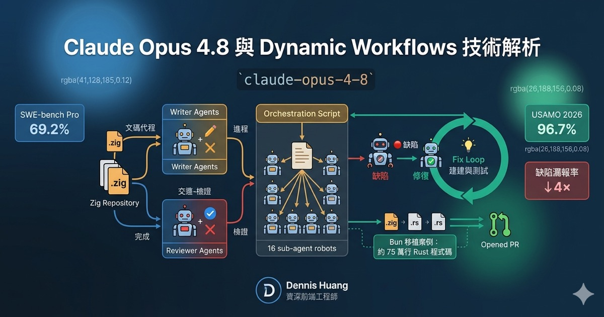

Anthropic 於 2026-05-28 推出 Opus 4.8（claude-opus-4-8）。這篇文章從架構工程師的視角，
拆解 Opus 4.8 的核心升級、Fast Mode 變化、自主能力提升，以及本次發布最重要的架構變化——Dynamic Workflows。
每個段落保留 Why → How → What's Next 的三段結構，方便直接對應到你的技術決策。
01Opus 4.8 核心升級
Why — 為什麼重要
Opus 4.8 是 Opus 4.7 的直接升級，定價維持 $5 / $25 per MTok（input / output），Anthropic 將其定位為當前一般可存取的最強模型。相較於前代，Opus 4.8 對自身生成程式碼中缺陷的漏報率降低了約四倍，同時更少出現無根據的聲明——這是「更誠實回報自身進度」的量化依據。
在程式碼能力方面，SWE-bench Pro 從 4.7 的 64.3% 提升至 69.2%；數學推理能力大幅躍升，USAMO 2026 達到 96.7%（4.7 僅 69.3%）；長脈絡檢索在 1M token 場景下達 68.1%（4.7 僅 40.3%）。
How — 如何運作
三個核心改進方向：更敏銳的判斷力（sharper judgment）、更誠實的進度回報（honesty about own progress）、更長時間的自主工作能力。Anthropic 此次並未在 multimodal 視覺基準上大幅投入，重點明確集中在 agentic coding、computer use 與對齊性（alignment）的提升。
What's Next — 下一步行動
claude-opus-4-8 作為備援提供者。
02Fast Mode 快速模式
Why — 為什麼重要
Fast Mode 並非不同的模型，而是 Claude Opus 的高速配置，在相同品質下達到 2.5 倍的輸出 token 速度。先前 Opus 4.7 / 4.6 的 Fast Mode 定價為 $30 / $150 per MTok，Opus 4.8 大幅降至三分之一——實際定價 $10 / $50 per MTok。
How — 如何運作
在 Claude Code 中以 /fast 指令切換，介面以 ↯ 圖示標示啟用狀態。需消耗 usage credits，適合快速迭代與即時除錯場景。
| 模式 | Input / MTok | Output / MTok | 速度 |
|---|---|---|---|
| Standard | $5 | $25 | 1× |
| Fast Mode | $10 | $50 | 2.5× |
What's Next — 下一步行動
開發階段的快速迭代場景（如 TypeScript 組件調試），Fast Mode 的 cost-performance 比值值得重新評估——是否優於直接使用 Sonnet 4.6。
03Claude Code 中的 Opus 4.8 自主能力
Why — 為什麼重要
Opus 4.8 在 agentic coding、reasoning、財務分析與知識工作等基準上均超越競爭對手。核心價值主張：減少人工中斷點（fewer checkpoints），讓工程師可以把注意力移到其他事務。
How — 如何運作
模型在長時間 session 中能持續追蹤 repo 進度，自主決定工具呼叫順序，且在誤判時能自我糾正——而非依賴使用者提示。這代表工程師可以交付更大粒度的任務，再回來審核結果即可。
What's Next — 下一步行動
可將批次腳本生成（scenario generation）交由 Opus 4.8 長時間獨立執行，再由自己進行品質審核，維持人工判斷層作為最終把關。
04Dynamic Workflows — 本次最重要的架構變化
Why — 為什麼重要
某些問題對單一代理來說太大，尤其在複雜的遺留程式碼庫：跨整個服務的 bug hunt、觸及數百個檔案的遷移、需要從多角度驗證的高風險計劃。Dynamic Workflows 正是為此而生的多代理協作架構。
99.8% 測試通過率、約 75 萬行 Rust 程式碼、從第一個 commit 到 merge 歷時 11 天。需注意：此移植結果目前尚未上線生產環境（not yet in production），是評估功能成熟度的關鍵資訊。
How — 技術機制
Dynamic Workflows 的運作有明確的限制與機制邊界：
| 參數 | 限制 |
|---|---|
| 並行代理 | 最多同時 16 個 |
| 單次 Run 上限 | 1,000 個代理 |
| Orchestration Script | 不能直接存取 filesystem 或 shell，只有子代理可以 |
| 中間結果 | 存於 script 變數，不佔用 context window |
| 中斷恢復 | 進度自動儲存，同一 session 內可從斷點恢復 |
Bun 移植的三階段工作流範例
Lifetime Mapping
為 Zig 程式碼庫中每個 struct 欄位映射正確的 Rust lifetime。
Parallel Write + Review
數百個代理並行撰寫每個 .rs 檔案，每個檔案各有兩個 reviewer 代理進行交叉驗證。
Fix Loop
持續驅動 build 與 test suite 直到全部通過；隔夜 workflow 處理不必要的資料複製並自動開 PR。
這本質上是一個多代理對抗驗證（adversarial multi-agent verification）系統，而非單純的平行化。與「一個代理出題、一個代理挑錯」的模式高度同構。
適用場景矩陣
| 場景 | 適合工具 |
|---|---|
| 2–3 步驟、可在單一對話完成 | Subagents / Skills |
| 任務計劃需寫成程式碼、可重複、可擴展至數百個獨立操作 | Dynamic Workflows |
Opus 4.8 System Card 指出，在 agentic prompt injection 的強健性方面反而略遜於 Opus 4.7：Gray Swan agent red-teaming 攻擊成功率為 9.6%（4.7 為 6.0%）。在 agentic pipeline 中接收不受信任輸入時，應重新審視 sandbox 隔離策略。
What's Next — 下一步行動
Dynamic Workflows 的「可稽核、可恢復、中間結果可檢查」特性，與醫療訓練場景的合規審計需求高度契合——這是一個可以直接轉化為銷售論述的技術架構優勢。
05整體戰略解讀
Anthropic 同步預告 Mythos 系列模型將在「未來數週內」更廣泛釋出。這意味著 Opus 4.8 的定位更像是銜接 Mythos 之前的過渡強化版——而非本世代的終點。
對採用 LiteLLM 作為 provider-agnostic 抽象層的架構而言，這個發布節奏（約 41 天迭代一次）正是「不鎖定單一提供者」策略正確性的再次驗證。保持路由彈性、持續追蹤每次發布的 benchmark 差異，才是在快速迭代時代維持系統競爭力的最佳做法。
FAQ常見問題
Standard Mode 維持 $5 / $25 per MTok，沒有變。Fast Mode 則從前代的 $30 / $150 大幅降至 $10 / $50 per MTok，降幅為三分之一。
目前為 Research Preview，需要手動啟用。使用前請確認 Claude Code 版本已更新至支援版本。Orchestration script 本身不能直接存取 filesystem，需透過子代理執行讀寫操作。
在誠實度與自我糾錯方面有明顯改善。但 System Card 揭露 agentic prompt injection 攻擊成功率為 9.6%（4.7 為 6.0%），在安全敏感的 pipeline 中需格外注意。
Anthropic 僅表示「未來數週內」更廣泛釋出，沒有公布精確日期。Opus 4.8 的定位是銜接 Mythos 之前的過渡強化版。